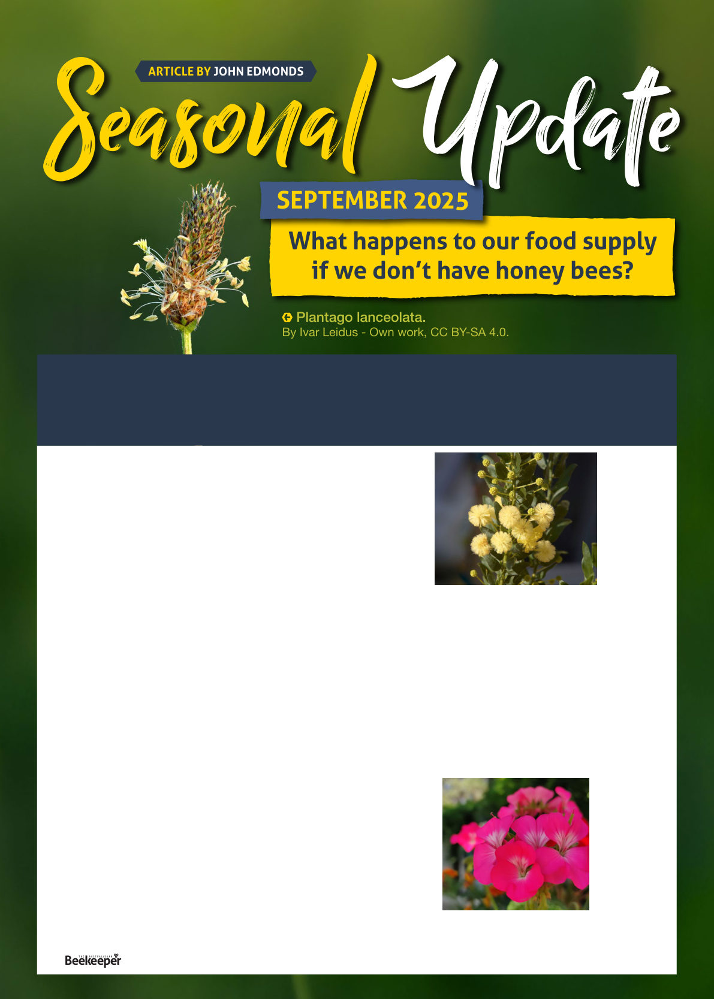

SEPTEMBER 2025
ARTICLE BY JOHN EDMONDS
Plantago lanceolata.
By Ivar Leidus - Own work, CC BY-SA 4.0.
What happens to our food supply
if we don’t have honey bees?
Many years ago, this fellow Cliff Winkler lived in Torquay. He was a prominent
local and would write many letters to the editor of the local paper, generally
stirring up the “greenies.” I had 50 hives of bees in his “depot,” a piece of land on
the edge of Torquay where he would dump clean fill.
One day he approached me saying he needed bees in his
large backyard as he was not getting his pumpkins pollinated.
I declined his offer as I said the 50 hives were about 1 kilometer
from his house and I thought they would do the job. He came
to my place and counted the pumpkins set on my father’s vines
and then went next door and counted my neighbor Kevin’s
pumpkin vines. He concluded he needed bees. So, I took 15
strong hives and placed them along his back fence. Behind
the property was the Surfcoast Shires work center and beside
was the Ambulance building so I expected complaints. The
bees flourished and became triple deckers full of honey. Every
time I attended to the bees Cliff insisted on being tough and
watched me inspecting the bees from close quarters refusing
to wear a veil until eventually the bees forced him to retreat. As
the pumpkin vines died off, I could not believe my eyes as the
backyard garden was covered in pumpkins. They certainly ben-
efited from the bees nearby. No complains arose and the bees
were kept there for many years until Cliff passed away and the
property was sold. The depot and house were demolished and
replaced by a new housing development shopping complex.
My neighbor Kevin would keep the seeds from his butternut
pumpkins. My father who resided next door decided to grow
some Jap pumpkins. The resulting pumpkins the following
year were a mix of the two varieties. Kevin was not impressed
with having green stripes on his butternut pumpkins.
August 12th 2025 While shifting bees to flowering canola, I
observed an excellent germination of clover plants. The farmer
does not like clover as it can cause bloat in the cattle. During
the dry autumn she fed her herd with purchased hay, as a result
the Balansa clover seeds were ingested and passed through the
cows and spread nicely throughout the paddock. “Corkscrew,”
also known as Pelargonium [Pelargonium spp.], has started to
flower with its pink flowers. Plantain [Plantago lanceolata]
is in profusion and when it starts to flower it provides a lot of
pollen for the bees.
The season appears to be two to three weeks later than
usual. Almond trees at Mildura are barely flowering. The
ones locally are in full bloom and they are usually three weeks
before the almond orchards of the Riverland. It is expected
the almonds will flower into the first week of September this
year. Bee hives have been brought in from many places—New
South Wales, Queensland, Northern Territory—and a South
• Pelargonium flower.
By Humoyun Mehridinov - Own work, CC BY-SA 4.0.
• Kangaroo Thorn flower (Acacia paradoxa).
By Wouter Hagens - Own work, Public Domain.
8 |
| Vol. 127 | No. 4